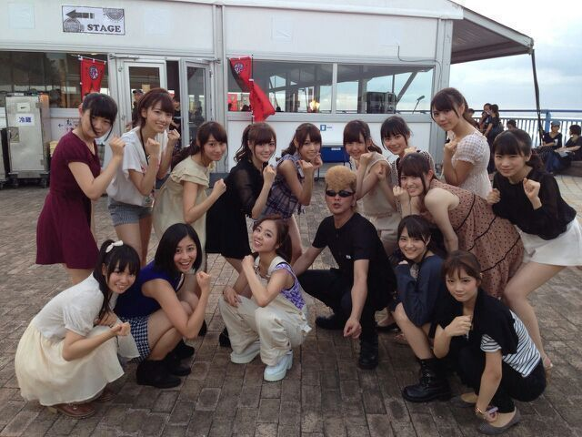

はーーーい \(・∀・)/
今日もお元気 ろってぃ-だーよ )))
わちゃわちゃちゃ〜。
今日はもうすぐ
乃木どこ？が始まりますねん♪
そーいやこないだ
NOGIBINGO!の運試しの回とか
乃木のの、のラジオとか
聴いてくれたかな〜(*´ω｀*)？
・))・)・・・・・・
今日の写メはいつもと違って
カッコよめで攻めようと思うでし☆
どや(/・З・)/ ドンッ
フェリーにでも
乗ってるかの様だろぅ？？笑
(・┰・´)キリッ
この衣装はそうっ！
昨日の 氣志團万博であります！！
感想・・・・・
ステージでかかった！
めっちゃ汗かいた！
人の多さにびっくりした！
気持ち良かった！
本間 最高やった！
氣志團万博に呼んで頂けて
あのステージでliveが出来たこと
本間に嬉しいし 勉強になりました(*^^)
Zeppより大きいステージ、
そして、
本ステから広がるTゾーンに
横に広がるステージ
会いかも や 指望遠鏡 で
皆で煽りにかかる時
自由にいっぱい動けたし
ステージ中を走り回れました！！！
そして 氣志團の皆さんが
すごく優しい方で
終わってから一緒に写真を
撮って下さいました //

ありがとうございます\(´∀`)/☆
嬉しゅう〜〜
まひろハンは 翔さんの隣にいるで。
あ...ふと思い出した。
小学生の頃
全校集会でなあ
氣志團さんの曲かけて踊った(≧▽≦)
仲良い友達と。
また来年も 呼んで頂けるよう
これからも頑張っていく！！！
っとゆーことでまひろはん
お風呂に入ってくる(*´З`*)
さよなら。のし